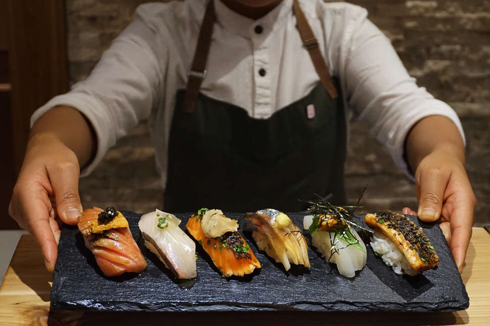
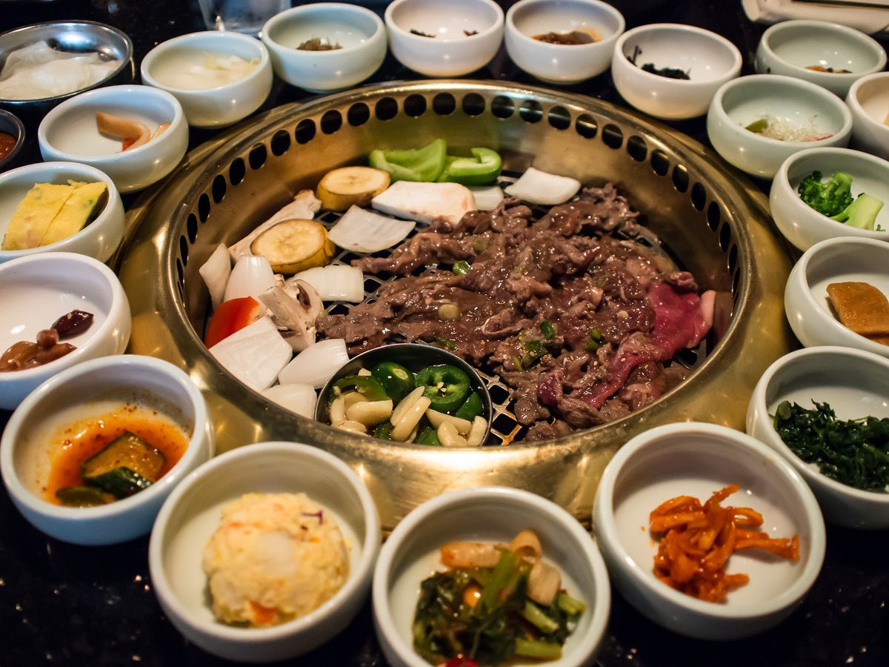

While a hot pot full of flavored broth is kept simmering, raw ingredients are placed into the pot and are cooked in a manner similar to fondue

Sushi
Sushi is a Japanese dish of prepared vinegared rice, usually with some sugar and salt, accompanying a variety of ingredients, such as seafood, vegetables, and occasionally tropical fruits.

Korean Barbecue
Korean barbecue refers to the popular method in Korean cuisine of grilling meat, typically beef, pork, or chicken.
MY RESTAURANT BLOG
A blog shares Asian cuisine restaurant around Orange County
ASIAN CUISINE
a simple introduction with scroll box
Asian cuisine includes several major regional cuisines: Central Asian, East Asian, North Asian, South Asian, Southeast Asian, and West Asian. A cuisine is a characteristic style of cooking practices and traditions, usually associated with a specific culture. Asia, being the largest and most populous continent, is home to many cultures, many of which have their own characteristic cuisine. Ingredients common to many cultures in the East and Southeast regions of the continent include rice, ginger, garlic, sesame seeds, chilies, dried onions, soy, and tofu. Stir frying, steaming, and deep frying are common cooking methods. While rice is common to most Asian cuisines, different varieties are popular in the various regions. Basmati rice is popular in the Indian subcontinent, Jasmine rice is often found across the Southeast Asia, while long-grain rice is popular in China and short-grain in Japan and Korea. -- Source: Wiki
{kind=link}